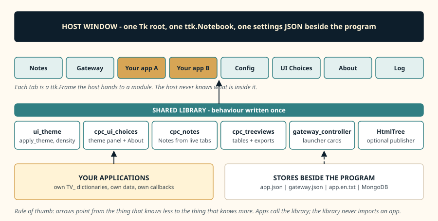
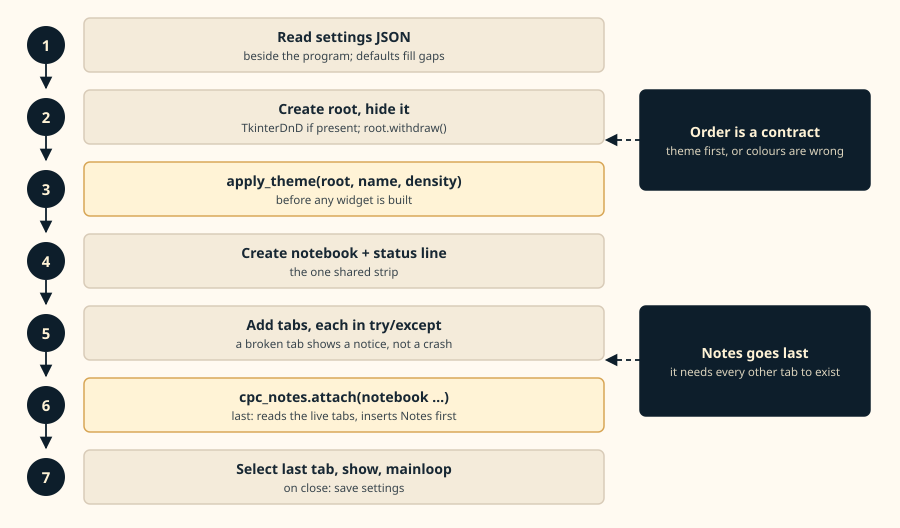
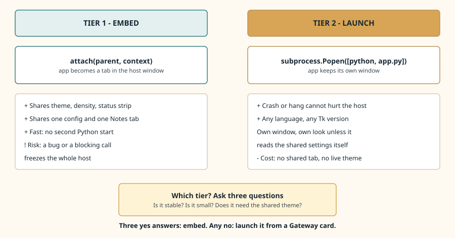
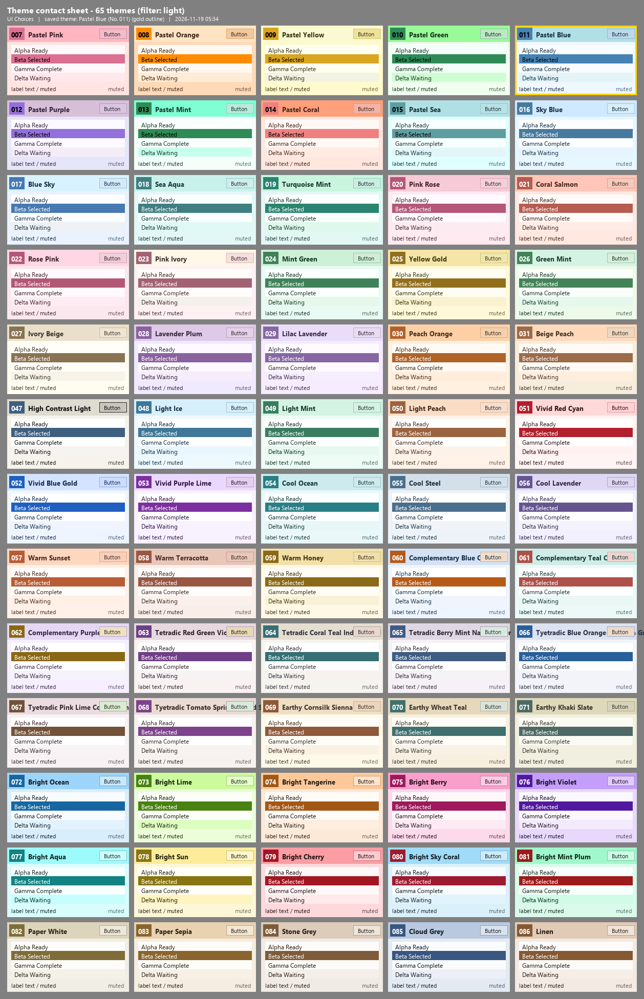
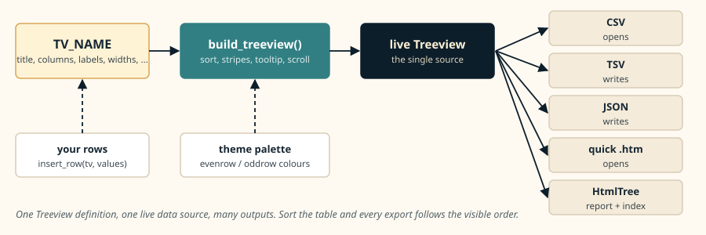
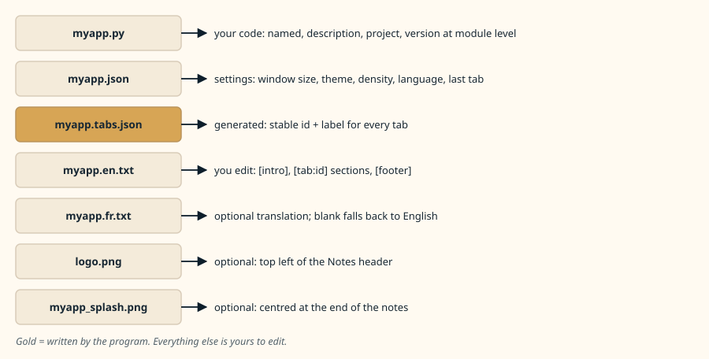

Explore the chapters
Ten separate programs can each be excellent and still feel like ten strangers. A host window changes that: it gives them a shared look, a shared place to start, a shared manual and a shared way to show tables. This essay explains how to put that together from the pieces already in your suite, and how to instruct an AI to add a new program without breaking the rules that hold it together.
What we are building
The aim is a single controlling window that gathers many separate Python applications under one roof, without forcing any of them to give up what makes it useful on its own. It is a host: a Tk window with a notebook of tabs, one look, one place to start things, and one place to read what each program does.
Your uploaded files already contain most of the parts. gateway_controller.py is the launcher with cards, projects and a standalone main that assembles Notes, Gateway, Config and UI Choices. cpc_notes.py writes the Notes tab from whatever tabs exist. cpc_treeviews.py supplies every table. The contact sheet shows the shared theme system that makes them look related. What is missing is not code but a written contract that says how a new program joins. That contract is what the last chapters give to an AI.
This essay goes in a fixed order. First the features, each with the reason it earns a place. Then the principles that hold them together. Then the architecture, the startup order, the embed-or-launch decision, the theme and table systems, and the Notes system. The final chapters are written to an AI and to you: how to introduce your own code and tabs, and what to verify before trusting the files you supplied.
The features, and why each earns its place
Each card is tagged. In your code means I saw it in the uploaded source. In your standard means it is promised by the Treeview standard. Proposed means it is my suggestion and does not exist yet.
Launcher cards grouped by project
What: Cards read from gateway.json with name, icon, description and path; right-click to rename or set a project; an All tab plus one tab per project.
Why: One reliable place to start every program, so nothing is lost in folders. Projects become sub-tabs, which keeps dozens of cards navigable.
Add by drag and drop
What: Drop a file, folder or link; for a .py the description is read from its module-level text without importing it.
Why: Registering a program should take seconds, or it will not get done.
Embedded app tabs through one attach() call
What: attach(parent, context=None, **kwargs) returns the app's panel. Gateway already ends with exactly this shape.
Why: Embedding is what makes one theme, one config and one Notes tab possible. A single signature means the host needs no per-app code.
One theme and density for everything
What: ui_theme.apply_theme plus the UI Choices panel, previewed before Apply. The sheet below shows 65 light themes.
Why: Consistency is a usability feature and a reading aid. Changing it once must change it everywhere.
A Notes tab that writes itself
What: cpc_notes.attach scans the notebook, writes app.tabs.json, creates a blank app.en.txt and renders headings that link to each tab.
Why: Documentation that is separate from the interface drifts. Reading the live notebook means a new tab appears in Notes the moment it exists.
Notes in other languages
What: app.fr.txt overrides section by section; blank sections fall back to English.
Why: Your audience is multilingual; the tool should be too, and a missing translation must never leave a hole.
Shared tables and one-call exports
What: build_treeview from a TV_NAME dictionary; CSV, TSV, JSON, .htm; optional HtmlTree publishing.
Why: Every table sorts, stripes, tips and exports the same way, so users learn once. Exports reflect the visible order.
Settings beside the program
What: app.json with window size, theme, density, last tab; the host saves on close.
Why: Portable, visible, easy to back up, and one app cannot corrupt another's settings.
A status strip with a log
What: Every action announces itself; click the strip for the log; missing-file count shown.
Why: People should see what happened, and when. Silence reads as failure.
Session log tab
What: session_log() and build_log_tab() are described in your standard, section 11. See the checks chapter: I could not find them in the supplied source.
Why: A single in-memory log means no app invents its own log window.
Failure containment per tab
What: Each tab is built in try/except; a failure leaves a notice tab and the rest opens.
Why: One broken app must not take down the others, and the error must say what to do.
Health check on registered apps
What: On start, test each card path and metadata block, then show counts in the status strip. Gateway already counts missing files; this extends it to the metadata.
Why: A hub that points at moved files decays quietly.
Notice the pattern: almost every feature is something a person would otherwise rebuild in each app and rebuild slightly differently. A feature belongs in the host only when it is needed by more than one app and must look identical in all of them.
The principles underneath
These ten are not slogans. Each can be pointed to in the code you supplied, and each exists because the opposite caused a problem for someone.
Data, not code. Cards live in gateway.json, tabs in app.tabs.json, tables in TV_ dictionaries. Data can be edited, diffed and repaired by hand. Code cannot be repaired by the person using it. Gateway even keeps unknown JSON fields exactly as other tools wrote them.
One owner per concern. The app owns its data and its callbacks. The library owns sorting, stripes, exports and theming. When both do the same job, they drift apart, and users see it.
Construction order is part of the design. Theme before widgets; Notes after every other tab. Your Treeview standard says stripes are applied at build time, so a table built before the theme has wrong colours.
Optional means optional. Gateway imports ui_theme, cpc_ui_choices and cpc_notes through _optional_import, and a missing one only removes that part. Drag and drop needs tkinterdnd2 but falls back to buttons.
Every module runs alone and embedded. Gateway has attach() for hosts and main() for standalone. The module is the same file in both cases, so there is no second copy to maintain.
Stable identifiers, changeable labels. Notes sections are keyed [tab:slug], taken from the label at the first run and saved in app.tabs.json. A translated or renamed tab keeps its notes.
Never destroy. Exports never overwrite; they get a timestamp. Unknown JSON fields are preserved. The user can always go back.
Plain text as the source of truth. The .en.txt file is editable in any editor, in a format with three section kinds. No database, no special tool.
Read metadata without importing. named, description, project and version are found by plain-text scan, not by running the file. A faulty or slow app cannot hang the hub while it is being listed.
Paths relative to the program. Config, notes and stores are found beside the file or in its parent folder, never in the working directory the operating system happens to supply.
The architecture in layers
There are three layers and one side store. At the top, the host window owns the Tk root, the notebook and the settings file. In the middle, the shared library holds behaviour: theme, UI Choices, Notes, Treeviews, the Gateway and, optionally, the HTML publisher. Beneath, your applications supply what only they know: their data, their tables' definitions and what happens on a click.

The most useful rule is the arrow direction. If the library ever imports an application, the library can no longer be shared. If an application reaches into the host's widgets, it can no longer be launched alone. Both mistakes are easy to make and slow to undo, which is why the contract (the next chapters) is deliberately narrow: a panel, a context dictionary and a refresh function.
Your MongoDB backend sits in the application layer. The hub itself needs no database: it stores a handful of JSON files. That keeps the hub startable even when a database is down, which is exactly when you most need the Log and Notes tabs.
Startup order, step by step
The standalone main() in gateway_controller.py is the best existing recipe for a host. It does seven things in a fixed order, and the order is the lesson.

Two steps deserve comment. At step 5 each tab is built inside its own try/except and a failure calls _tab_unavailable, so the notebook still opens. At step 6 cpc_notes.attach is called once the notebook is complete: it reads each tab's label, writes .tabs.json, builds the Notes page and inserts it as the first tab. If the renderer is missing, a plain fallback Notes tab is used instead.
On close, the host writes window size, theme, density and the last selected tab, so the next start returns to where the person left off.
Two ways to host an app: embed or launch
Not every program should become a tab. A tab shares the host's process: it inherits the theme and settings, but a blocking call or an unhandled error in it affects everything. A launched program runs through subprocess.Popen([sys.executable, path]), as Gateway does for .py cards, and cannot harm the host.

Both are first-class. The same Gateway card can later be promoted: a program that begins as a launched card becomes an embedded tab once it has an attach() and has proved stable. The card keeps its entry; only the Tier changes.
One look for every app: the theme system
The contact sheet below is the live output of UI Choices: 65 light themes, each showing a heading bar, a button, a table with one selected row and two stripes, and label and muted text. The saved theme (Pastel Blue, number 011) carries a gold outline. A glance tells you what the options look like before anything is applied.

Why this matters to a hub: a person switching between ten tools should not have to re-learn where the selection colour is. Every theme carries evenrow and oddrow, so tables stripe themselves. Per your standard, an app must not call tag_configure for stripes, and must build its tables after apply_theme; after a theme change a running table has to be rebuilt or retagged.
One detail visible on the sheet: tiles 060 to 068 have long names that run under the Button. It does not affect the hub, but it is a small fix for the sheet generator.
Shared tables and every kind of output
A hub with ten apps that each build their own Treeview will have ten sort behaviours. cpc_treeviews.py removes that. An app declares a TV_NAME dictionary of six required keys (title, columns, labels, widths, minwidths, aligns) with optional sorts and stretch, calls build_treeview, then insert_row.

Because the live widget is the export source, the user's sort is respected without any extra code. Exports never overwrite: an existing name gets a timestamp, and CSV and .htm open afterwards unless open_after=False. The same widget can feed publish_treeview_htmltree, which is how any table in any app becomes a published report.
Notes: documentation that cannot drift
cpc_notes.attach(notebook, app_name, settings, directory) turns the notebook into its own manual. It creates and reads a small family of files beside the application.

The text file has only three kinds of section: [intro], [tab:stable-id] and [footer]. Inside them, a small Markdown subset works: # and ## headings, bold, italic, list lines and links. Each tab's heading in Notes is a link that selects that tab. The header reads named, description, project, version from the application's own source, so you write that information once, in the code.
The same dual idea appears in the Treeview teaching text: a guide tab with its own preferences that never changes the library. Notes is the user-facing version of that idea for every app.
Notes to an AI: introducing a user's code and tabs
This chapter is written to be copied to an AI. The first block is the standing instruction; the code blocks are the exact shapes to follow. The attach template is a proposal modelled on Gateway's own attach(parent, context=None, **kwargs); the host snippet is modelled on main().
Standing instruction to the AI
You are adding a user's existing application to a shared Tk host. Change as little as possible, apply fixes at the identified location only, and make no unrequested edits or new files. Discuss any structural change (where code goes, which files exist) before doing it. If the user says "no code yet", discuss only.
- Ask, do not guess. If you need a file to be accurate (the app's main .py, its config, its tab labels), ask the user for it. Never write temporary or guessed code to stand in for something you have not seen.
- Inventory first, no edits. Report what exists: where the root window is created, whether there is a ttk.Notebook, every ttk.Treeview, how settings are saved, which module-level metadata lines exist. Wait for the user to approve the plan.
- Add four metadata lines. Module-level
named,description,project,versionas plain string assignments. They are read by text scan, so keep them simple and at column 0. - Separate the window from the panel. Move the app's UI into a
ttk.Framesubclass whose constructor takesparent. Keep the existingtk.Tkshell only under__main__. Do not rename methods or move logic. - Provide attach(). Match Gateway's signature exactly, shown below. It must not create a root, call
mainloop, or change the theme. - Give each Treeview a TV_NAME. One dictionary per table, built through
build_treeviewafter the theme is applied. Delete any local striping or sort code only when the user asks. - Name the tabs deliberately. Tab labels become Notes ids. Choose them once. A rename later creates a new id and orphans the old notes.
- Register the app. Add a Gateway record using the fields Gateway reads:
app_name,desc,project,app_full_path,icon. Do not remove fields you do not recognise. - Generate and fill the notes. Run once so
myapp.tabs.jsonand a blankmyapp.en.txtexist, then fill[intro]and one[tab:id]per tab in plain sentences about what a person can do there. - Verify, then stop. Check the list in the next section. Report anything unverified. Make no other changes.
The shape every app should offer:
# myapp.py
named = "My App"
description = "One sentence on what a person can do here."
project = "Songs"
version = "2026-11-20_001"
class MyAppPanel(ttk.Frame):
def __init__(self, parent, context=None, **kwargs):
super().__init__(parent)
context = context if isinstance(context, dict) else {}
self.status = context.get("status_callback") or (lambda msg: None)
# existing UI built here, unchanged, with parent = self
def attach(parent, context=None, **kwargs):
context = context if isinstance(context, dict) else {}
panel = MyAppPanel(parent, context, **kwargs)
panel.pack(fill="both", expand=True)
return panel
if __name__ == "__main__":
root = tk.Tk() # the old shell, standalone only
attach(root, {"app_title": named})
root.mainloop()And the host side, per tab:
# in the host, after apply_theme and before cpc_notes.attach
for name, module in (("My App", myapp),):
tab = ttk.Frame(notebook)
notebook.add(tab, text=name) # label becomes the Notes id
try:
module.attach(tab, {"app_title": name, "status_callback": status.set})
except Exception as exc:
_tab_unavailable(tab, name, exc)Rules the AI must keep
- The panel never calls
mainloop, creates a root, or sets a theme. The host does. - Tables come from
TV_dictionaries throughcpc_treeviews; no local stripe, sort or export code. - Use the shared logging and status functions already in the app; do not add a log store of your own.
- Settings go in the app's JSON beside the program. Add keys; never reorder or delete existing ones.
- When two ways are possible (embed or launch, new tab or new card), present both with the trade-off and let the user choose.
Checks before you rely on the supplied files
While reading the files I noticed several things worth confirming. None blocks the design.
- Session log. Your standard (section 11) describes
session_log,build_log_tab,session_log_linesandclear_session_log. The uploadedcpc_treeviews.pydefines none of them. Either a newer version exists or the section is ahead of the code. Please send the current file if the Log tab matters. - Names. The standard and the
cpc_notesdocstring saycc_treeviewsandcc_notes; the files and imports arecpc_*. Pick one prefix, or every sample will confuse a new reader and an AI alike. - Helper guide. The
__main__block ofcpc_notes.pyimportscpc_helper_guide, which was not supplied, so it was not checked. - Footer links. The shared links at the bottom of every Notes page include
https://github/mrBmulti(no.com) and the text "But me a coffee". Both are inside the shared file, so one fix reaches every app. - Shared path. The
sys.pathsetup ingateway_controller.pyis commented out, so imports of siblings rely on the files sitting together or on the path set elsewhere.
If you would like, I can take any one of these next, and I will not change your files without being asked.
What the finished hub represents
When the pieces are in place, adding a program is a short, repeatable act: give it metadata, give it an attach(), give its tables definitions, register a card and write a few sentences of notes. In return the program gets a theme, a place in the notebook, an exportable table, a documented tab and a languages option, none of which it had to build.
The long-term value is not any single feature. It is that the cost of the tenth app is lower than the cost of the first, and that a new person, or an AI, can read one page and know how to join the system without breaking it.